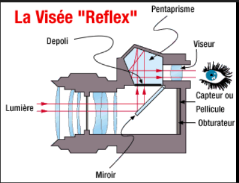
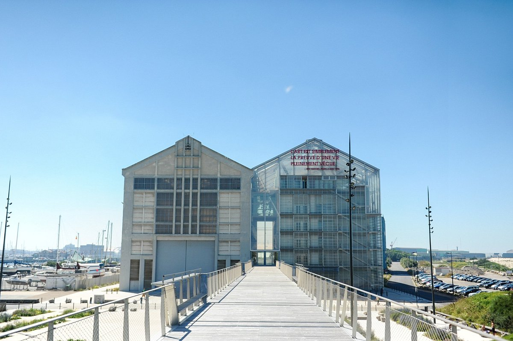
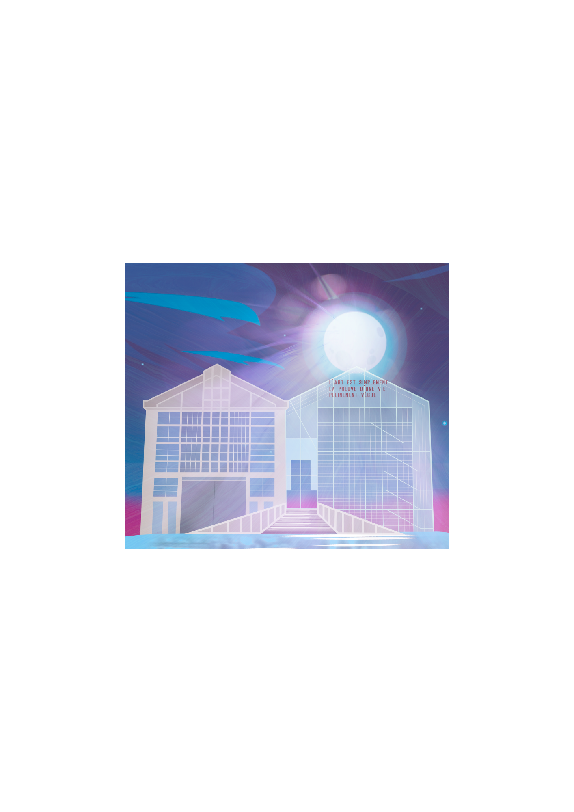
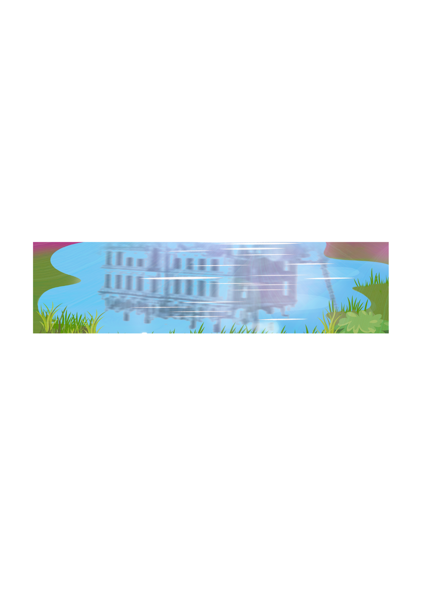
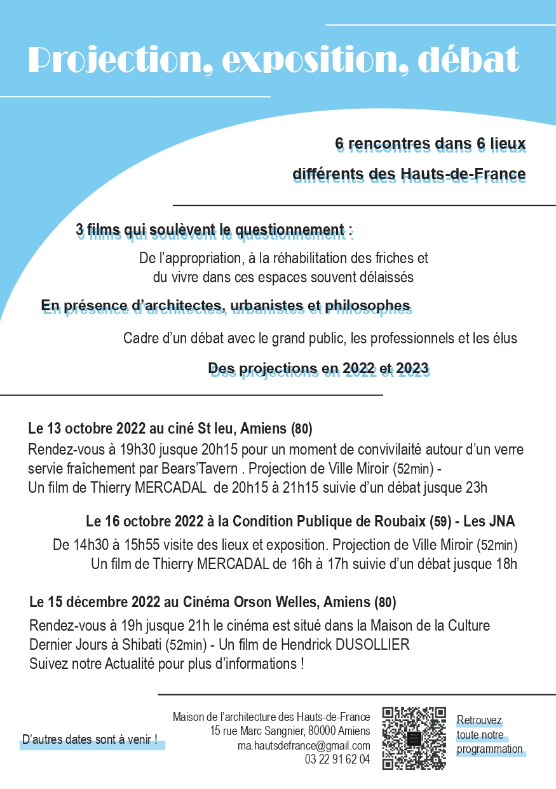
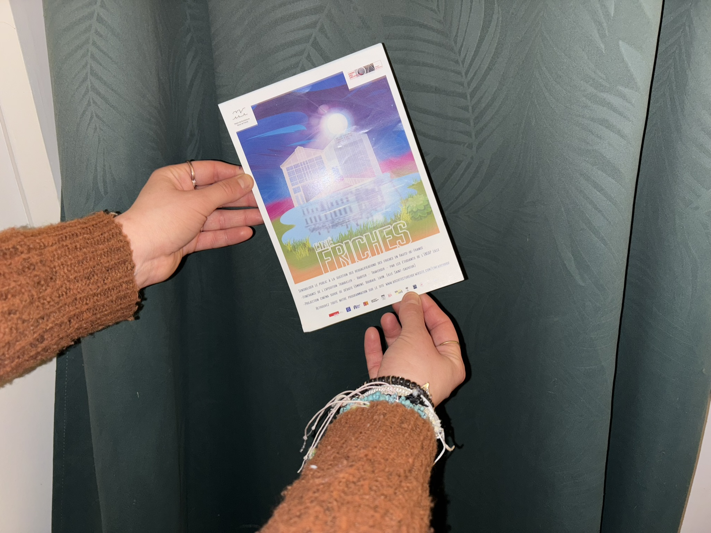
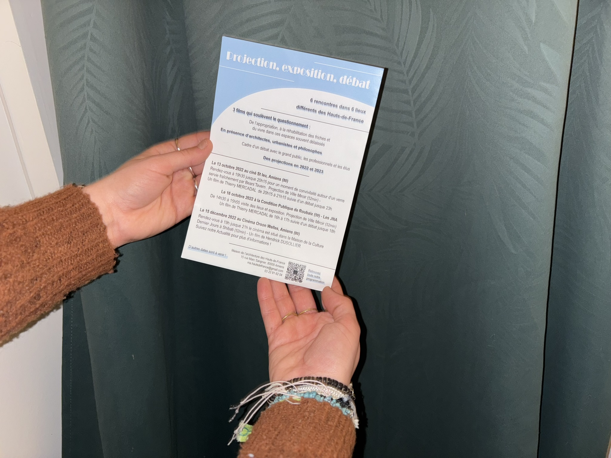

Pack Communication Ciné-Archi
Dans le cadre de mon alternance à la Maison de l'Architecture des Hauts-de-France, j'ai eu l'occasion de réaliser diverses créations graphiques print et web. Notamment, l'affiche créée pour la promotion du projet Ciné-Archi et un pack de communication complet incluant flyers et teasers vidéo.
Le projet
La loi vise le Zéro Artificialisation Nette d'ici 2050 et impose de réduire fortement la consommation de terres naturelles d'ici 2032. Dans ce cadre, la reconversion des friches industrielles, très nombreuses dans notre région, devient une priorité pour construire autrement. La Maison de l'Architecture des Hauts-de-France, l'Ordre des Architectes et le WAAO ont organisé un cycle de projections, témoignages, débats et expositions pour sensibiliser les acteurs locaux.
Objectif : Créer une affiche qui suscite la curiosité pour faire adhérer tous publics aux séances de diffusion Ciné-Archi.
Univers graphique
J'ai choisi comme référence une friche locale réhabilitée le Frac Grand Large de Dunkerque, également partenaire sur certains projets avec le Frac Picardie à Amiens. Le bâtiment a été entièrement dessiné sous Illustrator à partir d'une photo. Le pont crée une passerelle entre l'ancien et le nouveau. Au premier plan, le reflet dans l'eau représente la métamorphose ou la lentille d'une caméra. L'arrière-plan nocturne évoque les soirées Ciné-Archi, et la nature au premier plan lie ces différents mondes dans un espace imaginaire.
Illustrations & Visuels




Flyers


Photos d'affichage


Téléchargements
Teasers & Éléments vidéo